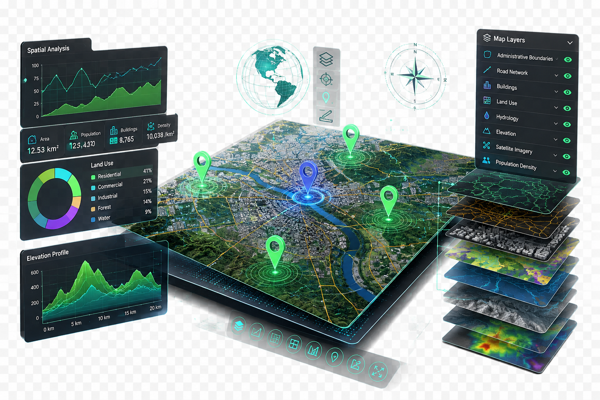

Interaktiva webbkartor
Interaktiva kartor för kunder som kan visa platser, projekt, fastigheter, tjänster eller annan geografisk information direkt på en webbplats.
GIS-LÖSNINGAR
Vi skapar interaktiva kartor, Web GIS-verktyg och platsanalyser för företag i Sverige som hjälper dig att förstå kunder, serviceområden, projekt och nya affärsmöjligheter.

VAD GIS KAN GÖRA
GIS kan hjälpa företag att förstå var kunder, tjänster, projekt och möjligheter finns och omvandla geografiska data till användbar affärsinformation.
Interaktiva kartor för kunder som kan visa platser, projekt, fastigheter, tjänster eller annan geografisk information direkt på en webbplats.
Visa vilka geografiska områden ditt företag täcker, till exempel leveranszoner, serviceregioner eller verksamhetsområden.
Analysera geografiska mönster för att bättre förstå kunder, tillgänglighet, täckning och potentiella affärslägen.
Presentera fastigheter, byggprojekt, tillgångar eller verksamhetsplatser i ett tydligt geografiskt gränssnitt.
Använd kartor för att förstå leveransområden, resavstånd och geografisk täckning för lokala tjänster.
Bygg skräddarsydda Web GIS-lösningar som kombinerar kartor, affärsinformation och interaktiva verktyg i en digital plattform.
VARFÖR ANVÄNDA GIS?
GIS är särskilt användbart när platsen har betydelse för din verksamhet. Det kan hjälpa dig att förstå kunder, täckning, tillgänglighet och geografiska möjligheter.
Använd geografisk information för att förstå var möjligheter, kunder och tjänster finns.
Visualisera kundområden, efterfrågemönster och geografiska samband på ett tydligare sätt.
Identifiera områden där ditt företag kan expandera, förbättra sin täckning eller nå fler potentiella kunder.
HAR DU EN PLATSBASERAD IDÉ?
Oavsett om du behöver en interaktiv karta, analys av serviceområden eller en skräddarsydd Web GIS-lösning kan du berätta vad du vill uppnå.
Diskutera ditt GIS-projekt →